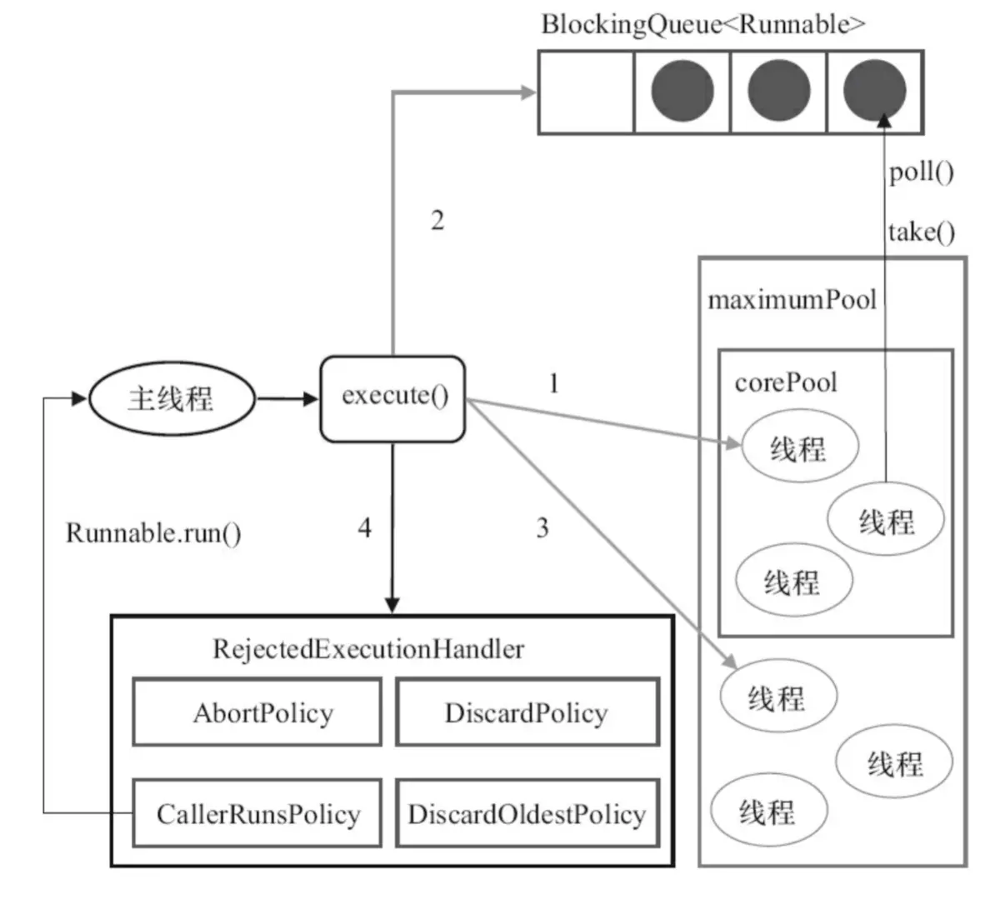

从线程到线程池到锁
序言
要解释线程，就必须明白什么是进程，那什么是进程呢？如果学过操作系统的同学应该知道：
进程是指运行中的应用程序，每个进程都有自己独立的地址空间(内存空间)，比如用户点击桌面的IE浏览器，就启动了一个进程，操作系统就会为该进程分配独立的地址空间。当用户再次点击左面的IE浏览器，又启动了一个进程，操作系统将为新的进程分配新的独立的地址空间。目前操作系统都支持多进程。
用户每启动一个进程，操作系统就会为该进程分配一个独立的内存空间。请注意是独立的内存空间。
在明白进程后，就比较容易理解线程的概念。
线程是进程中的一个实体，是被系统独立调度和分派的基本单位，线程自己不拥有系统资源，只拥有一点在运行中必不可少的资源，但它可与同属一个进程的其它线程共享进程所拥有的全部资源。一个线程可以创建和撤消另一个线程，同一进程中的多个线程之间可以并发执行。线程有就绪、阻塞和运行三种基本状态。
特点
这里主要讲的是Java中的线程：
- 线程是轻量级进程
- 没有独立的地址空间
- 一个进程可以有多个线程
而Java中的线程有五个状态：
- 新建状态(new)
- 就绪状态(Runnable)
- 运行状态(Running)
- 阻塞状态(Blocked)
- 死亡状态(Dead)
创建一个Java多线程
创建Java多线程有三种方式：
继承Thread类
简单写个代码
1 | public class ExtendThread extends Thread { |
注意哦，启动要用start，run只是个普通的方法。
实现Runnable接口进行创建
代码实现:
1 | public class ImpRunnable implements Runnable { |
对于本身已经有继承关系的类来说这种方式更加合适。
通过实现Callable和Future接口进行创建
代码如下：
1 | public class ThirdThreadImp { |
特别的，可以通过future对象获取一个线程的返回结果。
使用线程池
我们为什么要用线程池呢？
- 降低资源的消耗。线程本身是一种资源，创建和销毁线程会有CPU开销；创建的线程也会占用一定的内存。
- 提高任务执行的响应速度。任务执行时，可以不必等到线程创建完之后再执行。
- 提高线程的可管理性。线程不能无限制地创建，需要进行统一的分配、调优和监控。
- 每一个独立的线程都会吃掉1M内存
说说线程池的原理
线程池的核心ThreadPoolExecutor的处理流程如下：

- 判断核心线程池是否已满，如果不是，则创建线程执行任务
- 如果核心线程池满了，判断队列是否满了，如果队列没满，将任务放在队列中
- 如果队列满了，则判断线程池是否已满，如果没满，创建线程执行任务
- 如果线程池也满了，则按照拒绝策略对任务进行处理
ThreadPoolExecutor
我们来细看下ThreadPoolExecutor的构造
1 | public ThreadPoolExecutor(int corePoolSize, |
一共有7个参数，我们来逐个分析一下：
- corePoolSize： 线程池中的核心线程数
- maximumPoolSize： 线程池中的最大线程数
- keepAliveTime： 空闲时间，当线程池数量超过核心线程数时，多余的空闲线程存活的时间，即：这些线程多久被销毁
- unit： 空闲时间的单位，可以是毫秒、秒、分钟、小时和天，等等
- workQueue： 等待队列，线程池中的线程数超过核心线程数时，任务将放在等待队列，它是一个BlockingQueue类型的对象
- threadFactory： 线程工厂，我们可以使用它来创建一个线程
- handler： 拒绝策略，当线程池和等待队列都满了之后，需要通过该对象的回调函数进行回调处理
自带的几种线程池
我们来看看Executors这个线程池工厂：
1 | // 创建单一线程的线程池 |
单一线程的线程池
这个线程池只有一个线程。若多个任务被提交到此线程池，那么会被缓存到队列（队列是无界队列）。当线程空闲的时候，按照FIFO的方式进行处理。
- 它是一种固定大小的线程池；
- corePoolSize和maximunPoolSize都为1；
- keepAliveTime为0，意味着一旦有多余的空闲线程，就会被立即停止掉，但是由于队列无界，所以这里keepAliveTime无效。
- 阻塞队列采用了LinkedBlockingQueue，它是一个无界队列；
- 由于阻塞队列是一个无界队列，因此永远不可能拒绝任务；
- 由于采用了无界队列，实际线程数量将永远维持在nThreads，因此maximumPoolSize和keepAliveTime将无效。
固定数量的线程池
和创建单一线程的线程池类似（只是把corePoolSize和maximunPoolSize都设置为n了而已），只是这儿可以并行处理任务的线程数更多一些罢了。
带缓存的线程池
这种方式创建的线程池，核心线程池的长度为0，线程池最大长度为Integer.MAX_VALUE（无界线程池）。由于本身使用SynchronousQueue作为等待队列的缘故，导致往队列里面每插入一个元素，必须等待另一个线程从这个队列删除一个元素。适合大量低耗时的操作。
- 它是一个可以无限扩大的线程池；
- 它比较适合处理执行时间比较小的任务；
- corePoolSize为0，maximumPoolSize为无限大，意味着线程数量可以无限大；
- keepAliveTime为60S，意味着线程空闲时间超过60S就会被杀死；
- 采用SynchronousQueue装等待的任务，这个阻塞队列没有存储空间，这意味着只要有请求到来，就必须要找到一条工作线程处理他，如果当前没有空闲的线程，那么就会再创建一条新的线程。
定时调度的线程池
和上面3个工厂方法返回的线程池类型有所不同，它返回的是ScheduledThreadPoolExecutor类型的线程池。平时我们实现定时调度功能的时候，可能更多的是使用第三方类库，比如：quartz等。但是对于更底层的功能，我们仍然需要了解。
我们写一个例子来看看如何使用。
1 | public class ThreadPoolTest { |
等待队列
等待队列是BlockingQueue类型的，理论上只要是它的子类，我们都可以用来作为等待队列。
自带的阻塞队列有4种：
- ArrayBlockingQueue，队列是有界的，基于数组实现的阻塞队列
- LinkedBlockingQueue，队列可以有界，也可以无界。基于链表实现的阻塞队列
- SynchronousQueue，不存储元素的阻塞队列，每个插入操作必须等到另一个线程调用移除操作，否则插入操作将一直处于阻塞状态。
- PriorityBlockingQueue，带优先级的无界阻塞队列
线程工厂
ThreadFactory是一个接口，只有一个方法。既然是线程工厂，那么我们就可以用它生产一个线程对象。来看看这个接口的定义。
1 | public interface ThreadFactory { |
我们看看Executors的DefaultThreadFactory
1 | static class DefaultThreadFactory implements ThreadFactory { |
实现名称pool-{poolNum}-thread-{threadNum}。
拒绝策略
自带的4种策略：
- CallerRunsPolicy： 在调用者线程执行
- AbortPolicy：直接抛出RejectedExecutionException异常
- DiscardPolicy：任务直接丢弃，不做任何处理
- DiscardOldestPolicy：丢弃队列里最旧的那个任务，再尝试执行当前任务
这四种策略各有优劣，比较常用的是DiscardPolicy，但是这种策略有一个弊端就是任务执行的轨迹不会被记录下来。所以，我们往往需要实现自定义的拒绝策略， 通过实现RejectedExecutionHandler接口的方式。
提交任务
提交任务有两个方法，execute()和submit(),区别在于execute提交不需要返回结果的任务，而submit提交返回结果任务（返回future）。
关闭线程池
在线程池使用完成之后，我们需要对线程池中的资源进行释放操作，这就涉及到关闭功能。我们可以调用线程池对象的shutdown()和shutdownNow()方法来关闭线程池。
- shutdown()会将线程池状态置为SHUTDOWN，不再接受新的任务，同时会等待线程池中已有的任务执行完成再结束。
- shutdownNow()会将线程池状态置为SHUTDOWN，对所有线程执行interrupt()操作，清空队列，并将队列中的任务返回回来。
正确的配置线程池参数
说是参数，主要还是指线程池的大小了，建议按照CPU的核数来进行配置，如果是I/O密集可以考虑两倍于CPU数的大小。
另外的，可以通过Runtime.getRuntime().availableProcessors()来获取CPU的个数。
锁
说到锁就不得不提synchronized和Lock，先来一道面试题：
synchronized和Lock有什么区别？
- synchronized是关键字，Lock是接口
- synchronized在代码块结束后释放锁，而Lock需要手动释放
- Lock可以设置超时，不用一直等待
- Lock的锁状态可以判断
- synchronized 非公平，不可中断，而Lock可公平也可以不公平
- synchronized 悲观，而Lock是CAS乐观锁
我们不深入讲Lock了，毕竟是后妈生的，我们深入讲讲synchronized。
synchronized锁的底层实现
我们知道，对象创建后都在我们的堆里，并且对象的内存布局可以分为三个部分：对象头、实例数据、对齐填充，而synchronized就是实现在对象头。
而synchronized又根据锁等级的不同在对象头中有不同的标记方式，我们称作Mark Word:
锁升级
对象共有4种状态的锁标志：
无锁
被逃逸分析优化掉，认为这块代码安全，之后怎们样都是这个状态，或者说所有线程的对像已经出了安全区。
偏向锁
偏向锁是指当一段同步代码一直被同一个线程所访问时，即不存在多个线程的竞争时，那么该线程在后续访问时便会自动获得锁，从而降低获取锁带来的消耗，即提高性能。
当一个线程访问同步代码块并获取锁时，会在 Mark Word 里存储锁偏向的线程 ID。在线程进入和退出同步块时不再通过 CAS 操作来加锁和解锁，而是检测 Mark Word 里是否存储着指向当前线程的偏向锁。轻量级锁的获取及释放依赖多次 CAS 原子指令，而偏向锁只需要在置换 ThreadID 的时候依赖一次 CAS 原子指令即可。
偏向锁只有遇到其他线程尝试竞争偏向锁时，持有偏向锁的线程才会释放锁，线程是不会主动释放偏向锁的。
关于偏向锁的撤销，需要等待全局安全点，即在某个时间点上没有字节码正在执行时，它会先暂停拥有偏向锁的线程，然后判断锁对象是否处于被锁定状态。如果线程不处于活动状态，则将对象头设置成无锁状态，并撤销偏向锁，恢复到无锁（标志位为01）或轻量级锁（标志位为00）的状态。
轻量级锁
当锁是偏向锁的时候，却被另外的线程所访问，此时偏向锁就会升级为轻量级锁。
轻量级锁是通过线程自旋来实现的，线程不会阻塞，从而提高性能，而对于自旋成功比较频繁的线程，会提高最高自旋的次数，这叫适应自旋锁。
而当一个线程自旋到限制次数时，就会升级为重量级锁。
或者当第三个线程来竞争资源时，同样也会升级为重量级锁。
重量级锁
为什么重？ 因为重量级锁依赖的是对象监视器（monitor）实现，而其中 monitor 的本质是依赖于底层操作系统的 Mutex Lock 实现，每次调用都是一次systeam call，需要从用户态切换到内核态，成本非常高。